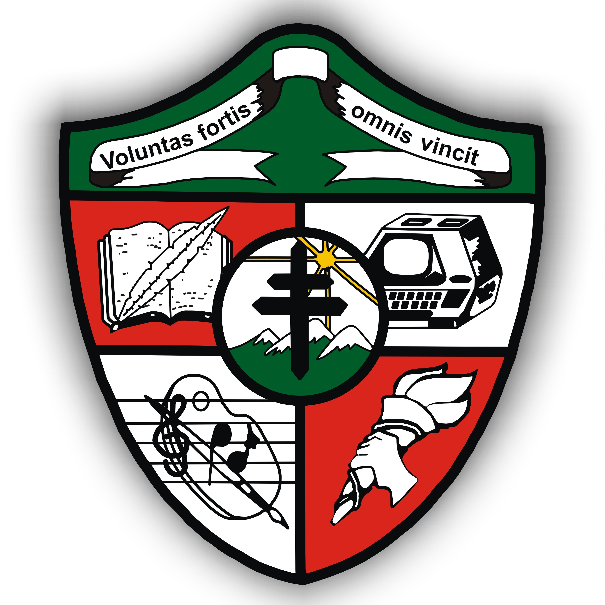

Colegio San Esteban Bariloche
Curse 4to y 5to y me egresé en 2021 con un bachiller en bilingue en lengua y matematica.
Universidad Nacional de Rio Negro
Empeze a cursar la carerra de Ingenieria en Computacion en el 2022 y ahora estoy cursando el segundo año de la carrera.

Argentina Programa
Terminne #SeProgramar la primera parte del programa y actualmente estoy cursando la segunda parte para convertirme en Desarolladora Full Stack.

Camridge English Assesment
Estudie Ingles y rendí el Advanced (CAE) y el Proficiency (CPE) tengo un nivel de ingles C2 certificado.